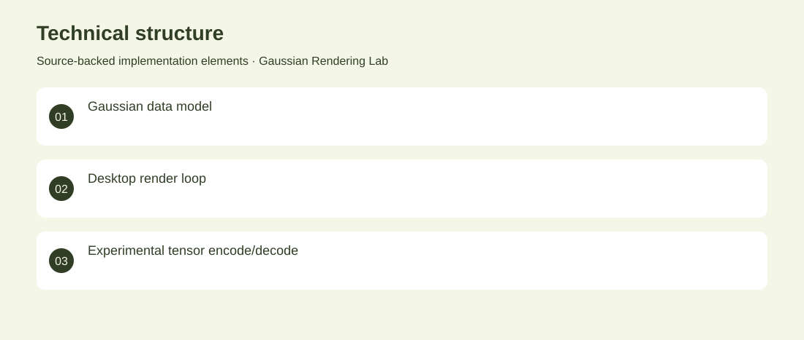

The project
Explore how Gaussian point representations and tensor operations can be organized in a desktop graphics experiment. The project defines Gaussian data structures, an OpenTK rendering loop and a TensorFlow.NET deformation-class experiment. Implemented the C# experiment structure, point-rendering code and basic tensor encode/decode operations. Early archived experiment. It is not a validated Gaussian-splatting reconstruction system or trained deformation model.
The problem
Explore how Gaussian point representations and tensor operations can be organized in a desktop graphics experiment.
The solution
The project defines Gaussian data structures, an OpenTK rendering loop and a TensorFlow.NET deformation-class experiment.
My contribution
Implemented the C# experiment structure, point-rendering code and basic tensor encode/decode operations.
Technical structure

The portfolio cover is an editorial illustration. No live product screenshot is presented for this project.
Showcase assets
{kind=link}
{kind=link}
{kind=link}
New portfolio identity. Newly designed marks are portfolio treatments, not claims of official client branding.